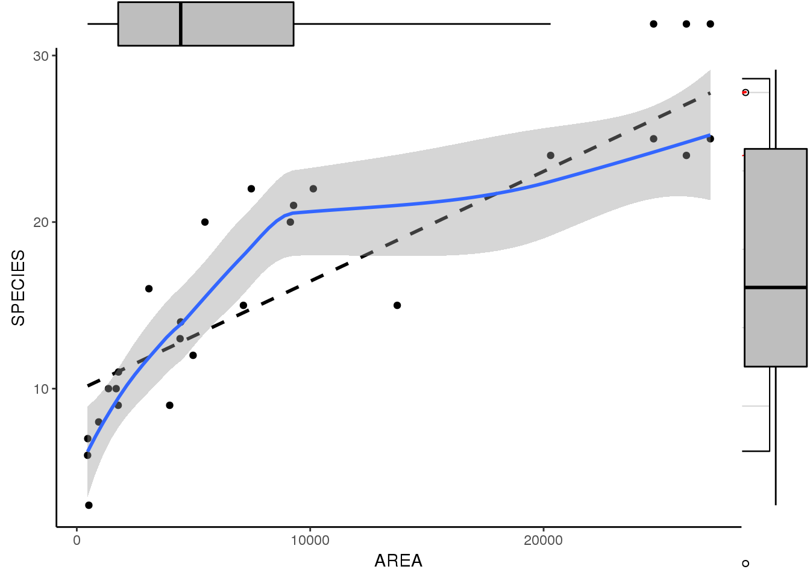
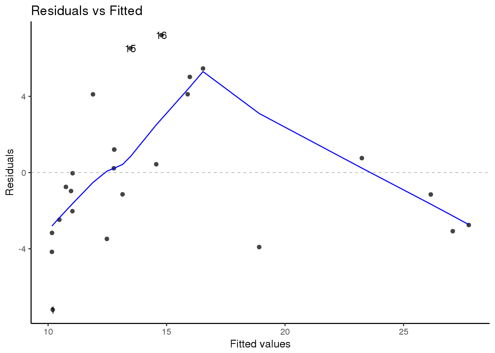
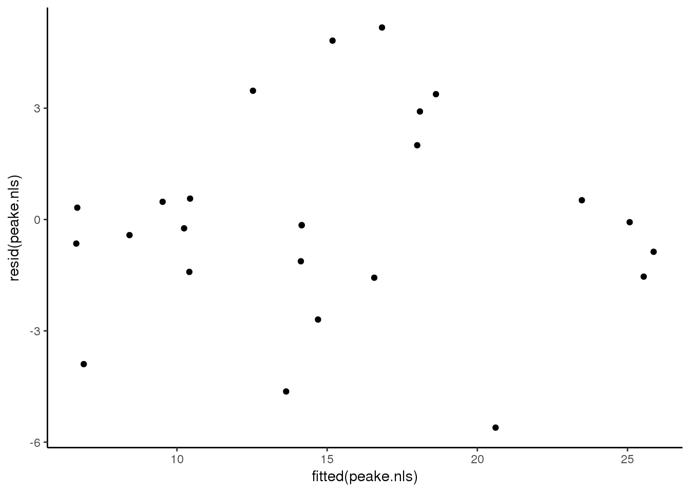
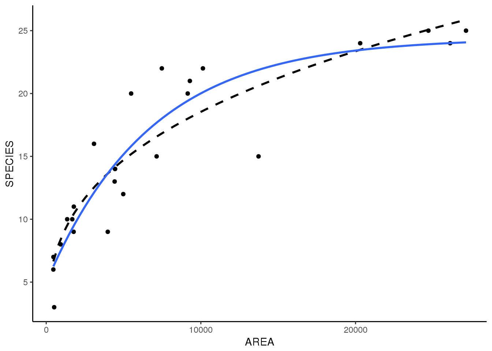

8.2 Demo B: Nicht-lineare Regression
Logan (2010 S. 248 ff)
library(tidyverse)
library(car)
library(ggExtra)
library(ggfortify)Datensatz peake.csv einlesen.
###################################################
### chunk number 1: pg 248
###################################################
peake <- read_csv("15_Statistik3/data/peake.csv")###################################################
### chunk number 2: pg 248
###################################################
library(car)
scatterplot(SPECIES~AREA, data=peake)
p <- ggplot(peake, aes(AREA,SPECIES)) +
geom_point() +
geom_smooth(method = "lm", se = F, colour = "black", lty = 2) +
geom_smooth(method = "loess")
ggMarginal(p,type = "boxplot", size = 10)
###################################################
### chunk number 3: pg 248
###################################################
autoplot(lm(SPECIES~AREA, data=peake),which = 1)
###################################################
### chunk number 4: pg 249
###################################################
peake.nls <- nls(SPECIES~alpha*AREA^beta, start=list(alpha=0.1, beta=1), peake)
ggplot(peake, aes(AREA, SPECIES)) +
geom_point() +
geom_smooth(method = "nls",
se=FALSE,
formula = y~alpha*x^beta,
method.args = list(start=list(alpha=0.1, beta=1))
)
###################################################
### chunk number 5: pg 249
###################################################
ggplot(NULL, aes(fitted(peake.nls),resid(peake.nls))) +
geom_point()
###################################################
### chunk number 6: pg 249
###################################################
plot(peake.nls)
summary(peake.nls)
##
## Formula: SPECIES ~ alpha * AREA^beta
##
## Parameters:
## Estimate Std. Error t value Pr(>|t|)
## alpha 0.8584 0.2769 3.100 0.00505 **
## beta 0.3336 0.0350 9.532 1.87e-09 ***
## ---
## Signif. codes: 0 '***' 0.001 '**' 0.01 '*' 0.05 '.' 0.1 ' ' 1
##
## Residual standard error: 2.733 on 23 degrees of freedom
##
## Number of iterations to convergence: 17
## Achieved convergence tolerance: 1.041e-06###################################################
### chunk number 7: pg 249
###################################################
AIC(peake.nls) #AIC
## [1] 125.1312
peake.lm<-lm(SPECIES~AREA, data=peake) #linear fit
AIC(peake.lm) #lm AIC
## [1] 141.0756###################################################
### chunk number 8: pg 250
###################################################
peake.nls1 <- nls(SPECIES~SSasymp(AREA,a,b,c),peake)
summary(peake.nls1)
##
## Formula: SPECIES ~ SSasymp(AREA, a, b, c)
##
## Parameters:
## Estimate Std. Error t value Pr(>|t|)
## a 24.4114 1.6644 14.667 7.71e-13 ***
## b 4.9563 1.4244 3.479 0.00213 **
## c -8.8138 0.2482 -35.512 < 2e-16 ***
## ---
## Signif. codes: 0 '***' 0.001 '**' 0.01 '*' 0.05 '.' 0.1 ' ' 1
##
## Residual standard error: 2.719 on 22 degrees of freedom
##
## Number of iterations to convergence: 0
## Achieved convergence tolerance: 7.128e-07
AIC(peake.nls1) #AIC
## [1] 125.7644
deviance(peake.nls1)/df.residual(peake.nls1) #MSresid
## [1] 7.393005
anova(peake.nls,peake.nls1)
## Analysis of Variance Table
##
## Model 1: SPECIES ~ alpha * AREA^beta
## Model 2: SPECIES ~ SSasymp(AREA, a, b, c)
## Res.Df Res.Sum Sq Df Sum Sq F value Pr(>F)
## 1 23 171.78
## 2 22 162.65 1 9.1394 1.2362 0.2782###################################################
### chunk number 9: 251
###################################################
ggplot(peake, aes(AREA, SPECIES)) +
geom_point() +
geom_smooth(method = "nls",
se=FALSE,
formula = y~alpha*x^beta,
method.args = list(start=list(alpha=0.1, beta=1)),
lty = 2, colour = "black"
) +
geom_smooth(method = "nls",
se=FALSE,
formula = y~SSasymp(x,Asym, R0, lrc) # replace a, b, c with Asym, R0 and lrc
)
8.2.1 Libraries
Dieses Kapitel verwendet folgende Libraries: Horikoshi and Tang (2017), Attali (2017), Fox and Weisberg (2017), Wickham et al. (2017), Henry and Wickham (2017), Wickham, Hester, and Francois (2017), Wickham and Henry (2017), Müller and Wickham (2017), Wickham and Chang (2016), Wickham (2017c)
Literatur
Logan, Murray. 2010. Biostatistical Design and Analysis Using R : A Practical Guide. Wiley-Blackwell. http://onlinelibrary.wiley.com/book/10.1002/9781444319620.
Horikoshi, Masaaki, and Yuan Tang. 2017. Ggfortify: Data Visualization Tools for Statistical Analysis Results. https://CRAN.R-project.org/package=ggfortify.
Attali, Dean. 2017. GgExtra: Add Marginal Histograms to ’Ggplot2’, and More ’Ggplot2’ Enhancements. https://CRAN.R-project.org/package=ggExtra.
Fox, John, and Sanford Weisberg. 2017. Car: Companion to Applied Regression. https://CRAN.R-project.org/package=car.
Wickham, Hadley, Romain Francois, Lionel Henry, and Kirill Müller. 2017. Dplyr: A Grammar of Data Manipulation. https://CRAN.R-project.org/package=dplyr.
Henry, Lionel, and Hadley Wickham. 2017. Purrr: Functional Programming Tools. https://CRAN.R-project.org/package=purrr.
Wickham, Hadley, Jim Hester, and Romain Francois. 2017. Readr: Read Rectangular Text Data. https://CRAN.R-project.org/package=readr.
Wickham, Hadley, and Lionel Henry. 2017. Tidyr: Easily Tidy Data with ’Spread()’ and ’Gather()’ Functions. https://CRAN.R-project.org/package=tidyr.
Müller, Kirill, and Hadley Wickham. 2017. Tibble: Simple Data Frames. https://CRAN.R-project.org/package=tibble.
Wickham, Hadley, and Winston Chang. 2016. Ggplot2: Create Elegant Data Visualisations Using the Grammar of Graphics. https://CRAN.R-project.org/package=ggplot2.
Wickham, Hadley. 2017c. Tidyverse: Easily Install and Load ’Tidyverse’ Packages. https://CRAN.R-project.org/package=tidyverse.